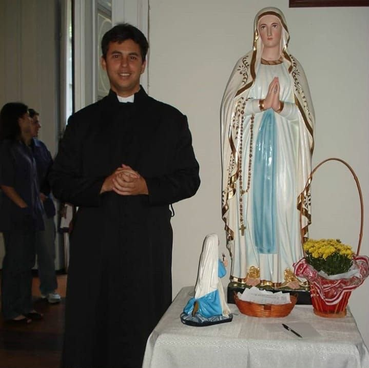
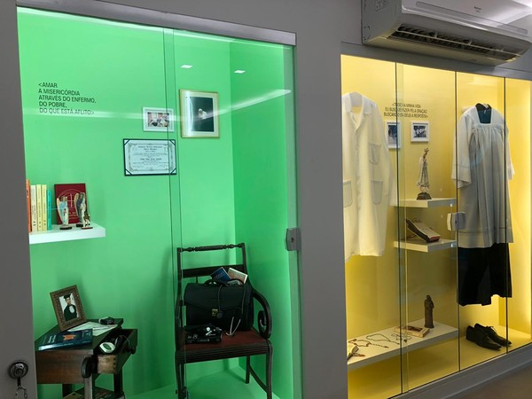
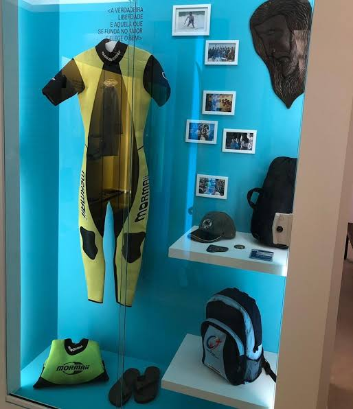

MÉDICO • SURFISTA • SEMINARISTA
Venerável
Guido Schäffer
Uma vida entregue a Cristo, ao cuidado dos enfermos e ao serviço dos mais necessitados.
Uma juventude vivida com intensidade. Uma profissão transformada em serviço. Uma vocação oferecida inteiramente a Deus.
SUA HISTÓRIA
Um jovem que escolheu viver para Deus.
Guido Vidal França Schäffer nasceu em 22 de maio de 1974, em Volta Redonda, no Rio de Janeiro. Médico, surfista e seminarista, viveu a fé no cotidiano e fez do encontro com cada pessoa uma oportunidade de servir.
Sua trajetória reúne juventude, amizade, esporte, cuidado com os doentes, evangelização e discernimento vocacional.
Ler a biografia completa
VOCAÇÃO
Um coração chamado ao sacerdócio.
Depois de amadurecer sua vida de oração e serviço, Guido reconheceu o chamado ao sacerdócio e iniciou a formação no seminário.
Não abandonou sua história: levou consigo a experiência de médico, o amor pelos pobres, a amizade com os jovens e a paixão por anunciar Cristo.

MEDICINA E SERVIÇO
Cuidar do corpo, sem esquecer a pessoa.
Na medicina, Guido encontrou uma forma concreta de servir. Dedicou atenção aos mais vulneráveis, inclusive pessoas com HIV/Aids e pessoas pobres e marginalizadas.
Seu serviço médico caminhava junto com a evangelização e com uma atenção profundamente humana a quem sofria.
Conheça sua missão como médicoESPIRITUALIDADE
Cristo no centro de tudo.
O testemunho de Guido recorda que a busca pela santidade pode atravessar os estudos, o trabalho, o esporte, as amizades e as escolhas de cada dia.
CAUSA DE BEATIFICAÇÃO E CANONIZAÇÃO
Um testemunho que continua vivo.
A investigação diocesana começou em 17 de janeiro de 2015. Em 20 de maio de 2023, o Papa Francisco autorizou o decreto que reconheceu as virtudes heroicas de Guido, que passou a receber o título de Venerável.


MEMÓRIA E LEGADO
Objetos que ajudam a contar uma vida real.
Fotografias, objetos pessoais e recordações preservam aspectos da trajetória de Guido e aproximam novas gerações de sua história.
Conheça o memorialREZAMOS COM VOCÊ
Deixe sua intenção de oração.
Envie sua intenção ao projeto. Ela será recebida de forma privada no e-mail da equipe.
CONHEÇA MAIS